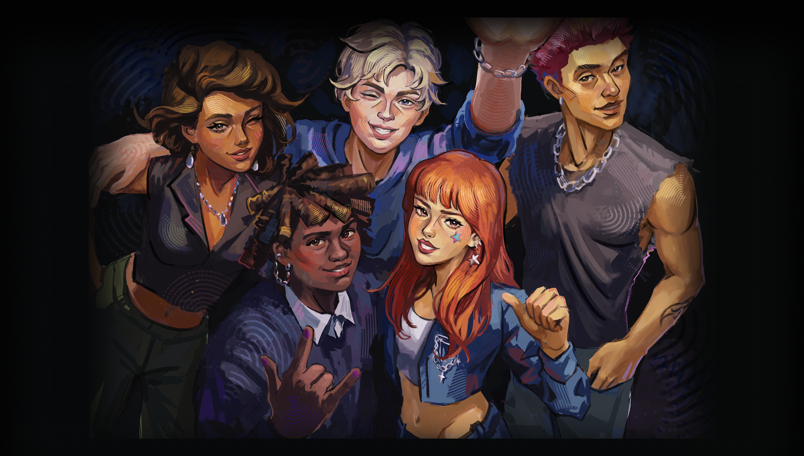
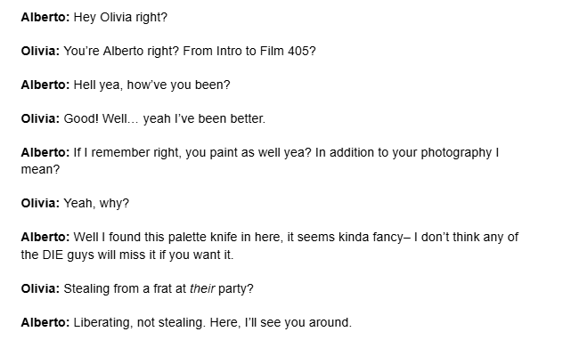
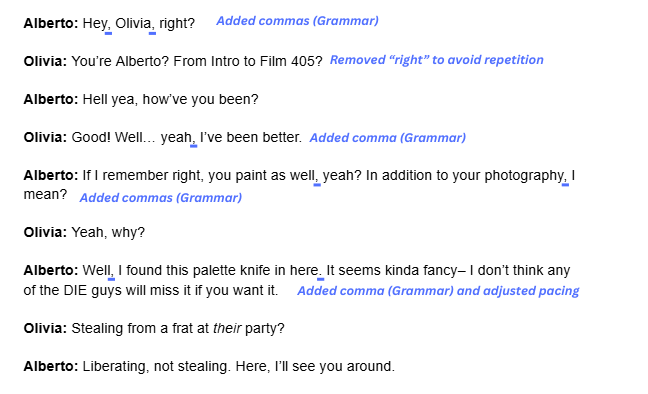
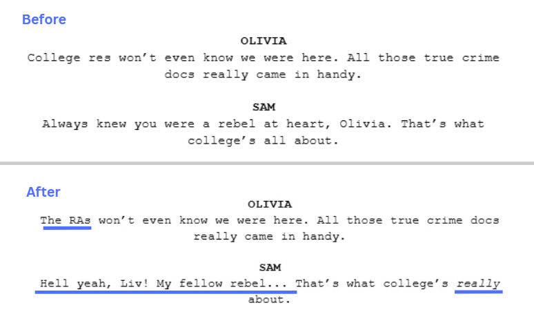
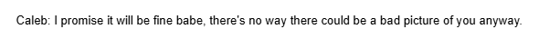
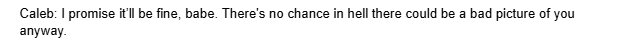

Olivia Herrera's closest friend, Kyle, went missing at a frat house two years ago. A party at that frat house is her chance to investigate what happened to him and get to the bottom of a strange connection she shares with her former group of friends.
Us Five Forever is available on Steam now!
The Context
I joined when Us Five Forever already had most of its content written, though much of it had not yet been fully proofread. During my time working with the team, I reviewed and edited hundreds of pages of in-game dialogue, item descriptions, and other narrative content.
However, grammar was only one part of the job. Because the narrative team was so large, inconsistencies in characterization and dialogue were fairly common. Different writers naturally interpreted characters in slightly different ways, even when there was a designated “expert” assigned to each one. When something slipped past those experts, I was often the person who caught it.
One of the most rewarding parts of the work was becoming deeply familiar with the cast through their histories, personalities, and interactions. Ensuring that every character remained consistent across the game was important not only for narrative cohesion, but also because I genuinely cared about protecting the distinct identities each character brought to the story. Strong character voices are what make stories memorable.
Editing Examples
I’ve included examples of content I edited, along with breakdowns explaining the reasoning behind each change. This first example focuses primarily on grammar and sentence clarity.


This next example was technically well-written, but it did not fit the voices of the characters speaking the lines. For example, the average college student would not typically refer to college housing authorities as “college res,” so I changed the term to “RAs” to better reflect more natural dialogue.
The character Sam is known for his bro-y, slang-heavy speaking style. He is rarely formal, and one simple way to reinforce that characterization is by avoiding overly proper speech, such as consistently using the protagonist’s full name. Making Sam feel believable relies heavily on energetic, lively dialogue, and that effect is strengthened through deliberate word choice and pacing.

When writing dialogue, flow is essential. In this next example, I used two very common dialogue edits. First, contractions are important for creating natural speech patterns. Most people in modern conversation use contractions regularly, especially a laid-back fraternity character like Caleb, so I changed “it will” to “it’ll.”
Second, the word “way” was repeated twice in close succession, which made the sentence feel clunky. I resolved this not only by replacing the repeated word, but also by slightly expanding the sentence to better convey Caleb’s personality. Since this scene takes place near the beginning of the game, it was important to establish his characterization quickly and efficiently through dialogue alone.

